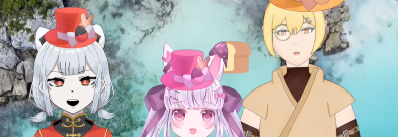
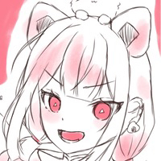
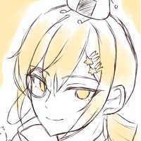
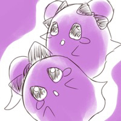
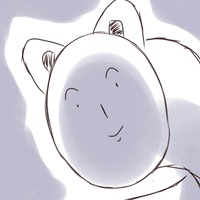

食品組とは？

起源について
2023年1月15日に同級生センシティブ晒しグループとしてDMで招集された3人組。
全員が食べ物モチーフであることから後に食品組と呼ばれるようになった。
ちなみに誰も正確な食品結成日を知らない。
3人について
わさび 代理名：おにぎり

名前はわさびだがモチーフはおにぎりであり、
隙あればインドを主張するが中華にとても狂っている。
短髪強気ヤンキーと長髪メスお兄さん姿の世界線が存在している。
口からゲーミングとヤカンが出る。
この3人中で1番お題ガチャを回している。
身長(156cm)
性別女
誕生日1月27日
星座水瓶座
水戸納豆 代理名：スティキネス

モチーフは名前の通り納豆。
発酵食品だが、本人は腐男子であることを否定している。
ロリコンとしていじられてきたが淫夢と巨女にも成通していることが発覚。
夢が大きい女の子姿の世界線が存在している。
この3人の中で1番支部のブクマ非公開件数が多い。
身長(171cm)
性別男
誕生日6月10日
星座双子座
すず餅 代理名：もちう
お餅がモチーフのウサギ。
ムッとすることがあると相手をイチゴジャムにしてしまう特技を持っている。
ウルフ髪のメスお兄さん姿の世界線が存在している。
お餅と鈴の絵文字正座待機中。叫び声がヤカン。
この3人の中で1番清楚。
身長(140cm)
性別女
誕生日7月30日
星座獅子座
食品組のお仲間
おはぎ

食品3人の性癖をねるねるねるねして生まれた女の子。
一人称ボクで下ネタ耐性は小学低学年級。
ツインお団子にしてお出かけするのが好き。原型なオバケ。
身長(156cm)
性別女
誕生日6月3日
星座双子座
わさびマン

すず餅がわさびにハグした結果生まれてしまったバケモノ。
わさびに極度に嫌われている。下は履いていない変態。
総攻め枠であり、水戸納豆と結ばれるのが夢。
身長(？？？ 食品最高身長)
性別？
誕生日3月19日
星座牡羊座
活動内容について
仲は良いものの、 三人集まっては誰が一番変態か、創作でやっているかを討論している。
絵チャやゲームを共にするときは隙あらばいじり合いを始め、その結果常に混沌を生み出している。
要は性癖奇襲大会を繰り広げている三人組である。